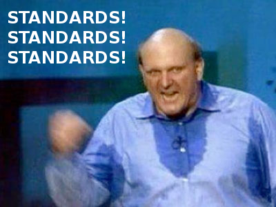
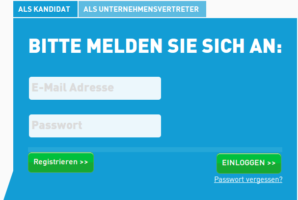
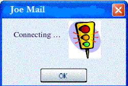

Klaus Fleerkötter
28. Februar 2013
aka Barrierefreiheit aka a11y
It really is providing the best UX for all types of users.
It's acknowledging and embracing diversity.
It fosters solid engineering principles, too.
Compliance, People, Software Quality
All public institutions are subject to equal opportunity bills
Don't lock out 10% of your prospective customers
Usability, semantic design and search engine friendliness

WCAG, HTML5, WAI-ARIA
Assistive technology works on top of regular browsers.
98% of all screen reader users have JavaScript enabled source .
Today, JS (if used carefully) enhances the browsing experience.
A collection of principles, guidelines, techniques and success criteria.
4 Principles: perceivable, operable, understandable, robust
The BITV is strongly tied and modeled after the WCAG.
Version 2.0 especially embraces JavaScript and RIAs.
Provide text alternatives for non-text content:
<label> elements or title attributes for controlsalt. Don't rely on visual elements to convey informationDon’t write what the image is (“red dot”, “a stop sign”, “a fancy clock with golden hands and blue numerals”). Describe what the image relays or represents (“The build failed”, “Don’t do this”, “It is 7:01 pm”).


Colors: Ensure sufficient contrast between fore- and background
Provide throughout keyboard navigation caring for the tab order
Avoid traps and dead-ends.
<!-- Gets focus on tab stepping -->
<span tabindex="0">Show pop-up</span>
<!-- Doesn't get focus on tab stepping -->
<a tabindex="-1">Styled as a link</a>
Use consistent headings
They're used for orientation and keyboard navigation.
<h1>Bike Store</h1>
<section>
<h2>Articles</h2>
<!-- ... -->
</section>
<aside>
<h3>About Us</h3>
<!-- ... -->
</aside>
Don't steal the current focus
$('#results').focus(); // uh-oh
Do use focus to guide the user
<!-- Focus the first form element -->
<form>
<label for='name'>Your name (required)</label>
<input name='name' type='text'>
</form>
<!-- Focus the close/cancel button in modal dialogs -->
<dialog>
<button id='close-button' autofocus>Close</button>
</dialog>
Avoid seizure-causing elements (blinking, flashing)
lang attribute on <html> and partslabelNot all semantic markup is accessible, but all accessible markup is semantic.
Built with a11y in mind: Semanticness and Forms
Semantic elements
<section>, <nav>, <article>, <aside>, <hgroup>, <header>, <footer>
Input types
Rails form helpers, too!
<input type="tel">
<input type="search">
<input type="url">
<input type="email">
<input type="datetime">
<input type="date">
<input type="time">
<input type="month">
<input type="week">
<input type="number">
<input type="range">
<input type="color">
Attributesrequired, autocomplete, pattern, min, max, step
<input type="email" name="email"
title="Ihre E-Mail-Adresse (erforderlich)" required>
<input type="text" name="country_code" pattern="[A-Za-z]{3}"
title="Three letter country code">
<input type="number" min="8" max="12" name="age"
title="Nur für Grundschulkinder">
Elements
<meter min=0 max=20 value=12>12cm</meter>
<progress max=100 value=50>50%</progress>
<progress></progress>
An RDF-based ontology enabling assistive technology to understand UI interactions better.
WAI-ARIA can be used to convey semanticness where "native" solutions don't cut it.
Golden Rule:
Use native HTML(5) where possible, fall back to WAI-ARIA.
Roles identify markup compositions that represent widgets, e.g.
Roles are assigned via the attribute aria-role
aria-xy).application roleAssistive technology uses keyboard combinations other than browser default.
This role tells AT to pass through the concerned onkeydown events.
Roles to handle focus gracefully.
Generic
<aside role='region'></aside>
Specific
<aside role='log'></aside>
<aside role='status'></aside>
<aside role='alert'></aside>
<aside role='progressbar'></aside>
<aside role='marquee '></aside><!-- sic! -->
<aside role='timer'></aside>
Example: Displaying form validations
For smoke testing only
Klaus Fleerkötter